Bc. Štěpánka Trappová
komunitní porodní asistentka
Porod není jen medicína
aneb proč na porodu záleží
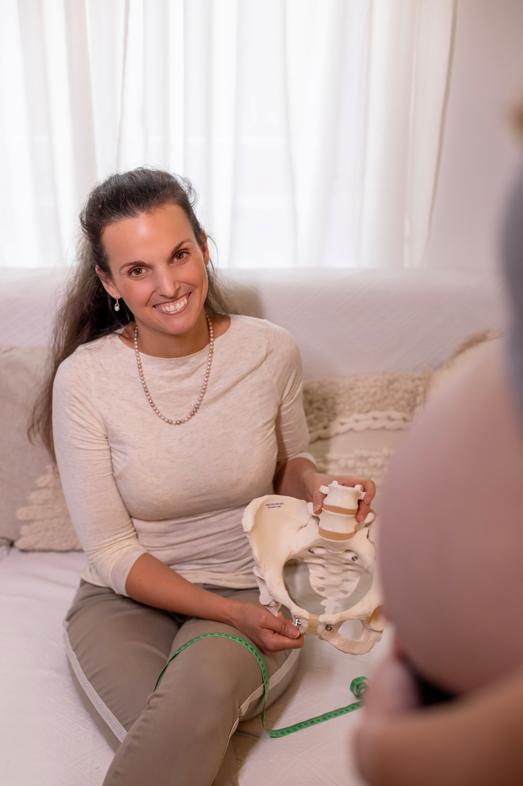
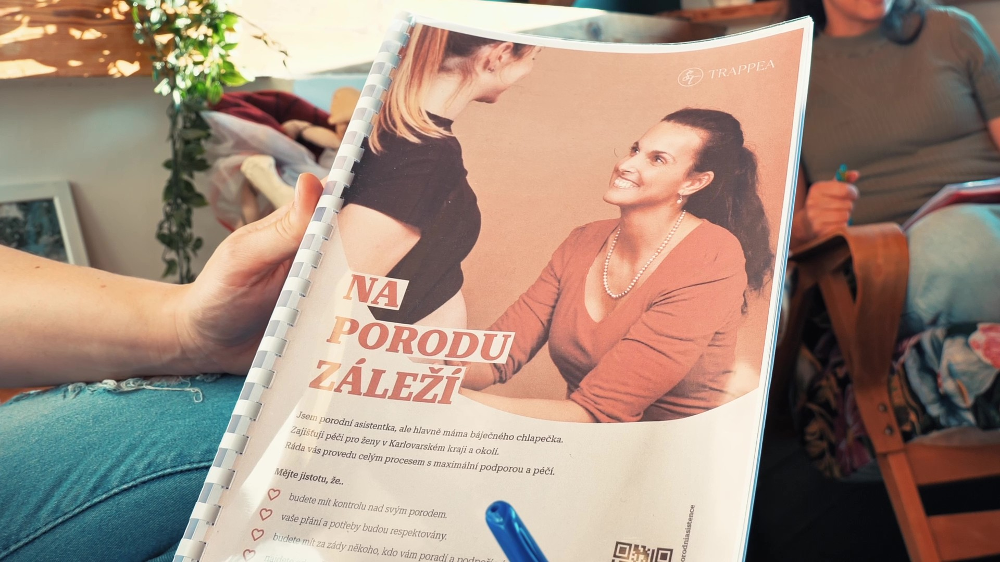
Kdo jsem a co dělám
Jsem porodní asistentka.
- Doprovázím ženy těhotenstvím, porodem i po porodu.
- Nabízím předporodní přípravu, doprovod k porodu a poporodní péči.
Moje práce není jen o zdravotní péči. Je hlavně o podpoře, důvěře a bezpečí.
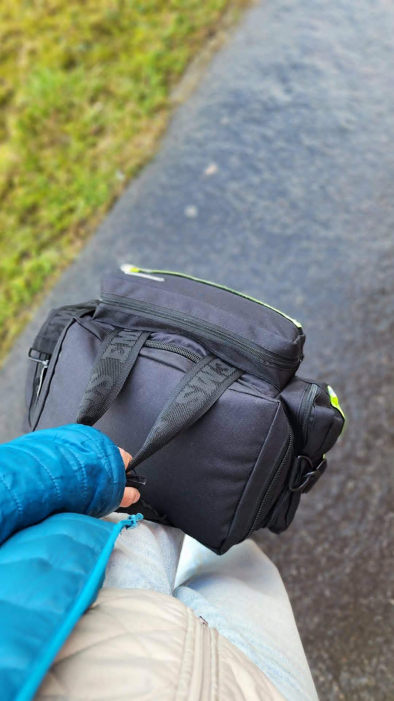
Domácí péče porodní asistentky
- v těhotenství
- počínající porod
- poporodní péče
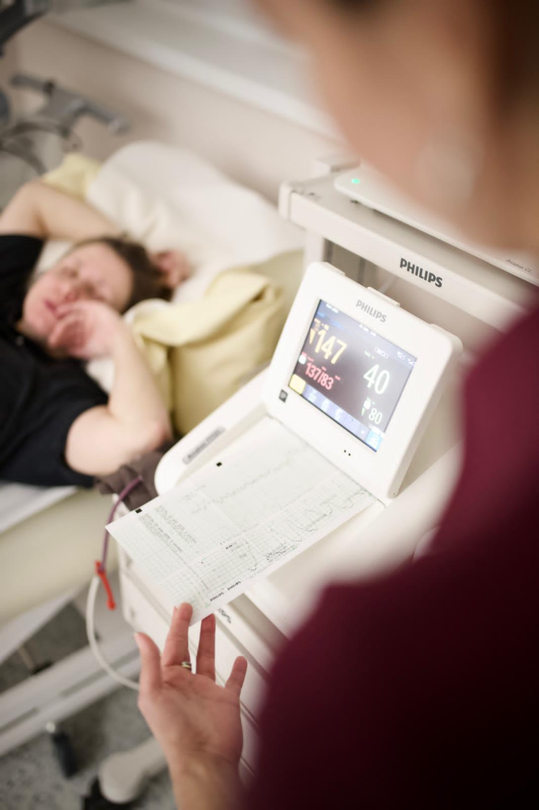
Jak si ženy porod představují
Podle filmů a médií:
- žena leží na zádech
- hodně zásahů a léků
- rychlý, dramatický průběh
- často pasivní role ženy
Realita v systému
- méně prostoru pro individuální přístup
- časový tlak
- zavedené postupy
- omezený prostor pro vytvoření důvěry
Ne proto, že by někdo chtěl ublížit. Ale protože systém má svoje limity.
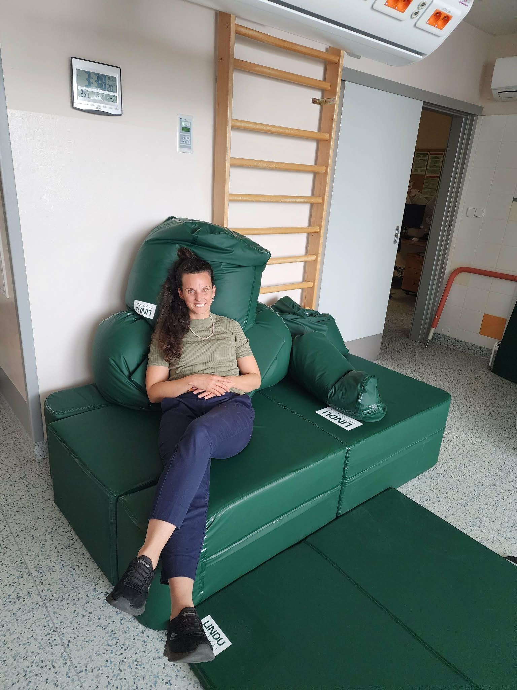
Porod může vypadat i jinak
Různé polohy, více svobody pohybu a větší zapojení ženy.
- gauč
- voda
- porodní stolička
- postel
Každé ženě vyhovuje něco jiného.
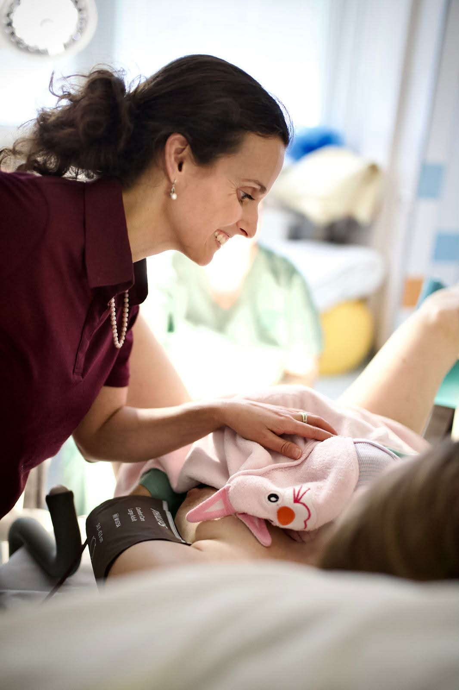
Neexistuje jeden „správný“ porod
- každá žena je jiná
- každé tělo je jiné
- každá zkušenost je jiná
Důležité je, aby se žena cítila bezpečně, respektovaně a vyslyšeně.
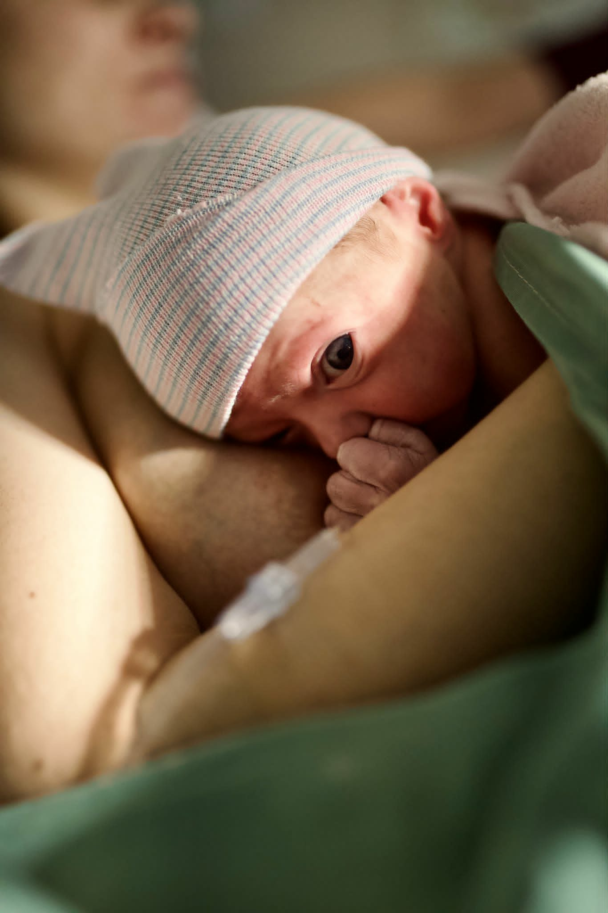
Proč na porodu záleží
- porod si žena pamatuje celý život
- většinou ho zažije jen 1–2×
Není to „jen jeden den“.
Jak porod ovlivňuje ženu
- sebevědomí
- vztah k sobě
- vztah k dítěti
- začátek kojení
Může ji posílit... nebo naopak oslabit.
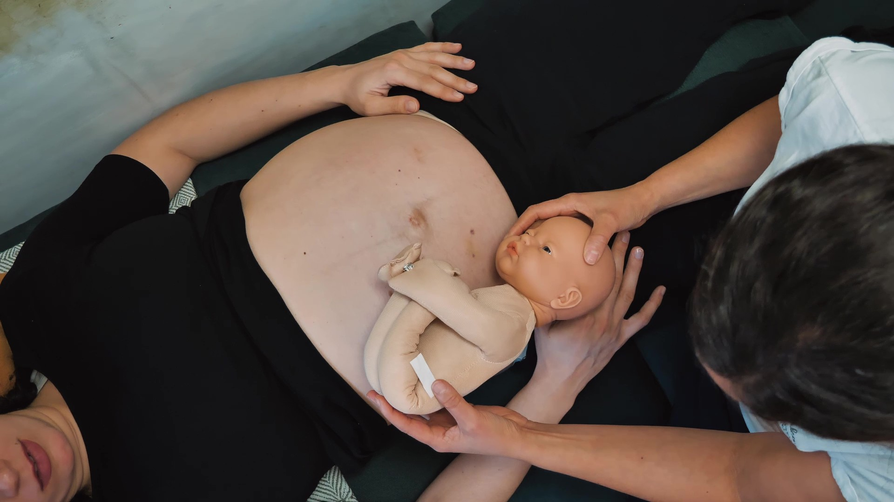
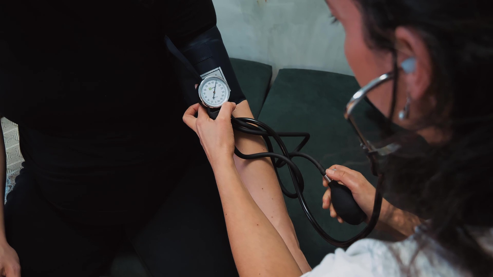
Proč dělám to, co dělám
Protože věřím, že porod může být posilující zážitek a ženy mají v sobě obrovskou sílu.
- podporu
- respekt
- individuální přístup
- pochopení
- nesouzení
Co dělá rozdíl
- když žena není „jen další pacientka“
- když má kolem sebe známé lidi
- když má kontinuální péči
Důvěra = klíč k dobrému zážitku.
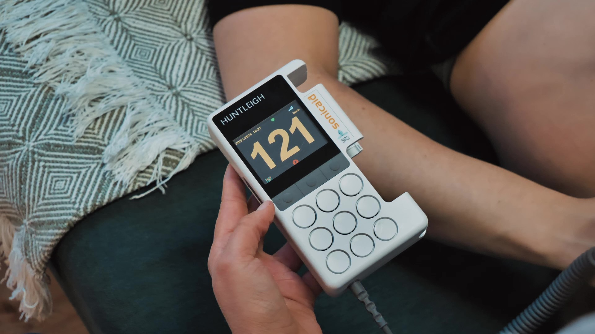
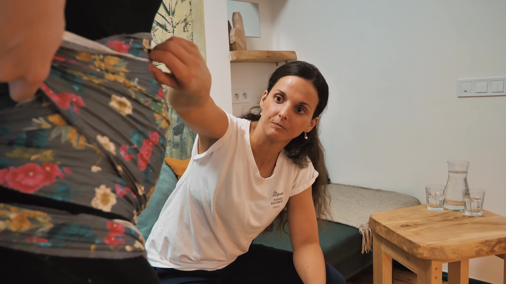
Co mě ovlivnilo
- zkušenost z Německa
- vlastní porod
- ukázalo mi to, že věci mohou fungovat i jinak
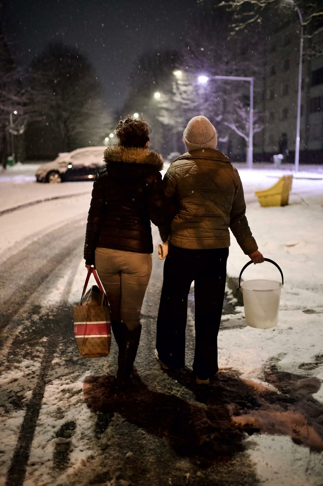
Na porod nemusíte být sama
- můžete mít podporu
- můžete mít informace
- můžete mít někoho na své straně
A přesně to nabízím.
Pokud vás to oslovilo...
Ráda vás podpořím. Můžete se na mě obrátit.
- Bc. Štěpánka Trappová
- +420 605 074 332
- stepanka@trappea.cz
- www.trappea.cz
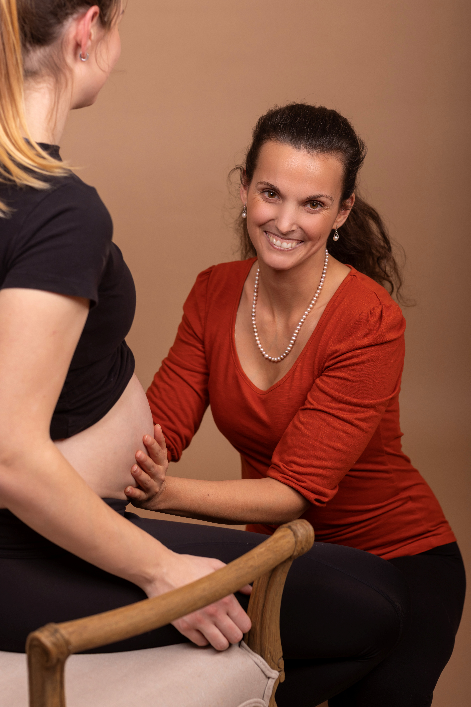